Component Selection
Mohammed Al Rasbi - Interpretation Board
Prices checked October 21, 2026 (USD, quantity one; tax and shipping excluded).
Audio amplifier
| Solution | Pros | Cons |
|---|---|---|
| Option 1: Adafruit 2130 - PAM8302A module 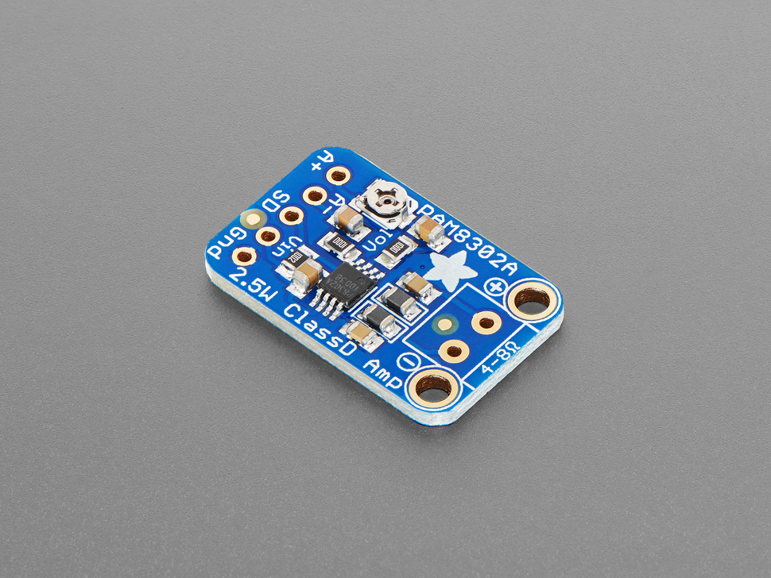 $3.95 each Product link |
- One channel matches the required warning speaker. - Small module and input trim simplify assembly and level adjustment. |
- Needs analog audio conditioning from PWM. - Available output can exceed the selected speaker rating; limit drive. |
| Option 2: Adafruit 987 - MAX98306 module 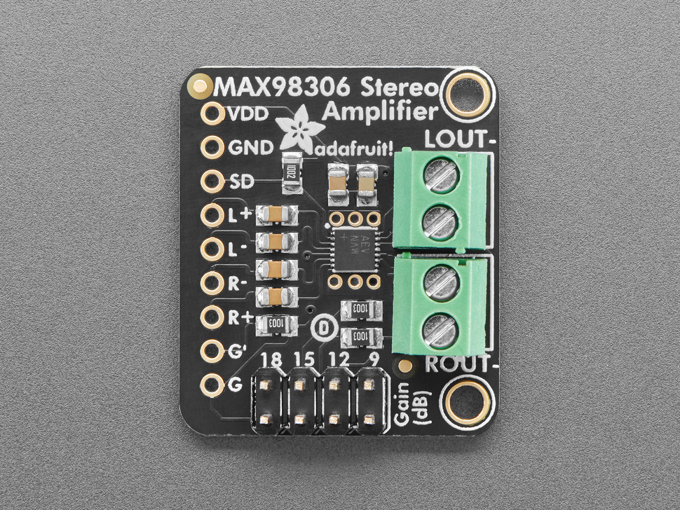 $8.95 each Product link |
- Selectable gain provides useful volume headroom. - Two channels allow a later left/right audio experiment. |
- Second channel is unnecessary in this design. - Higher price than the mono option; speaker power still needs limiting. |
| Option 3: Adafruit 1552 - TPA2012 module 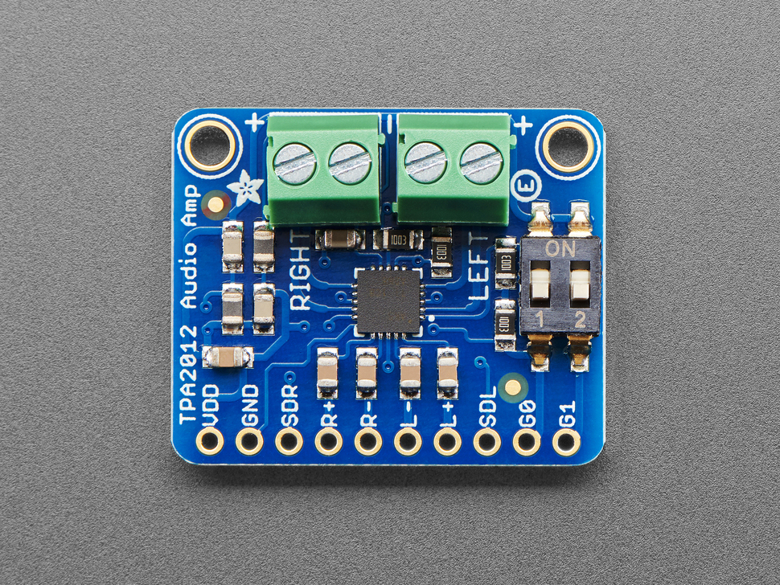 $9.95 each Product link |
- Gain switches simplify prototype tuning. - Built-in protection and analog inputs suit a breadboard prototype. |
- Costs more than the selected mono module. - Unused stereo channel and short-speaker-wire guidance complicate packaging. |
Choice: Adafruit 2130 / PAM8302A
Rationale: The PAM8302A is compact, inexpensive, and provides the single audio channel needed for warning tones. Its volume trim makes adjustment easier; filter and attenuate the PIC PWM signal and keep output within the speaker rating.
Product photos and specifications: linked supplier pages.
Speaker
| Solution | Pros | Cons |
|---|---|---|
| Option 1: Adafruit 3923 - mini oval 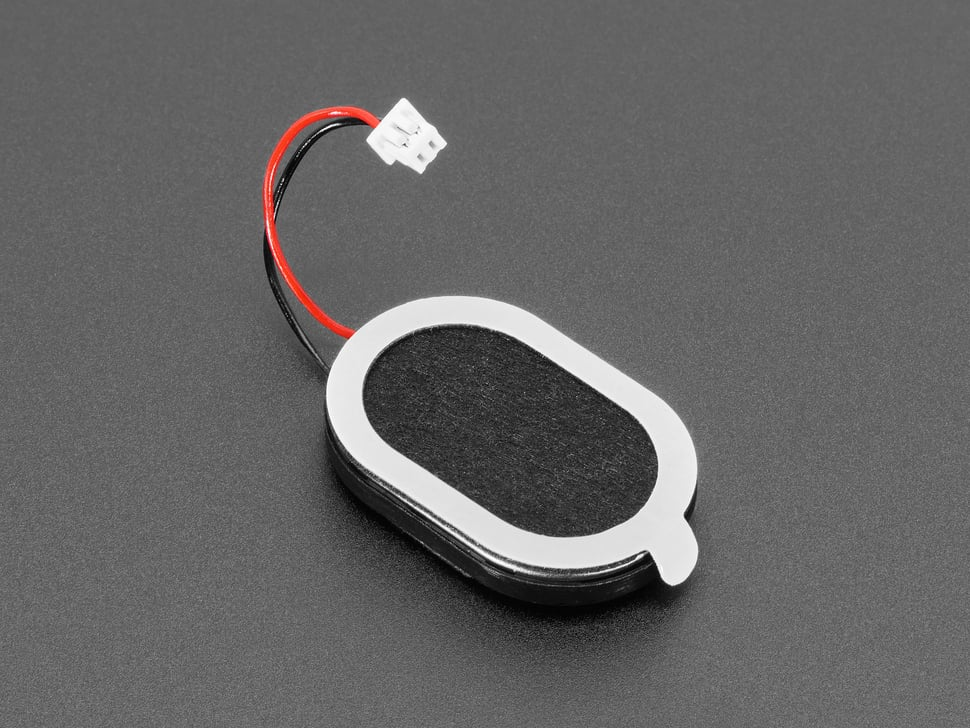 $1.95 each Product link |
- Compact shape fits a handheld body. - 1 W rating offers more margin than the mini metal option. |
- Supplier page currently says out of stock. - Short lead and enclosure opening require mechanical planning. |
| Option 2: Adafruit 1890 - mini metal 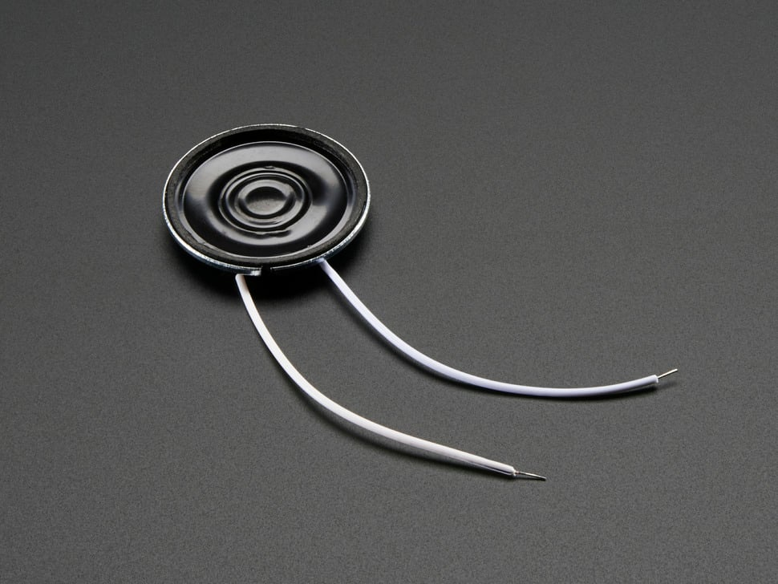 $1.95 each Product link |
- Small, shallow package is easy to place. - Attached wires simplify prototype connections. |
- Lower continuous rating requires stricter volume limiting. - Listed out of stock; title and detailed power ratings differ, so use 0.25 W rated. |
| Option 3: Adafruit 1313 - 3-inch speaker 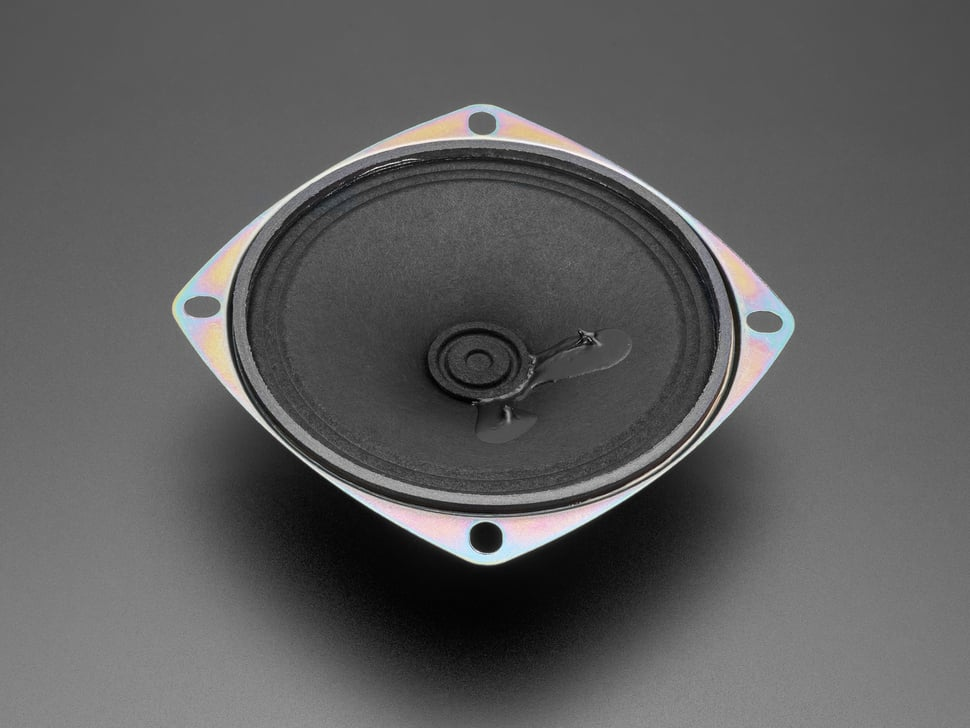 $1.95 each Product link |
- Mounting tabs provide a secure attachment method. - Compatible impedance and power class for the mono amplifier. |
- Large diameter and depth consume handheld space. - Heavier than the oval option and currently listed out of stock. |
Choice: Adafruit 3923 mini oval speaker
Rationale: The oval speaker fits the handheld enclosure better than the larger round option and has a higher power rating than the mini metal speaker. It is the preferred design choice, but its listed stock shortage must be resolved before ordering.
Product photos and specifications: linked supplier pages.
Vibration motor driver
| Solution | Pros | Cons |
|---|---|---|
| Option 1: Adafruit 2305 - DRV2605L 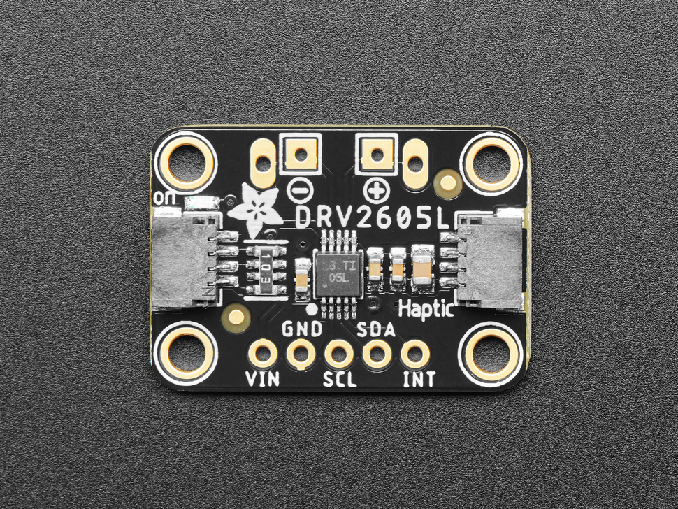 $7.95 each Product link |
- Built-in effects help distinguish warning states. - Two I2C signals reduce timing work in the PIC. |
- Requires register initialization and motor calibration/settings. - Costs more than the generic H-bridge and changes the earlier PWM interface. |
| Option 2: Adafruit 3297 - DRV8833 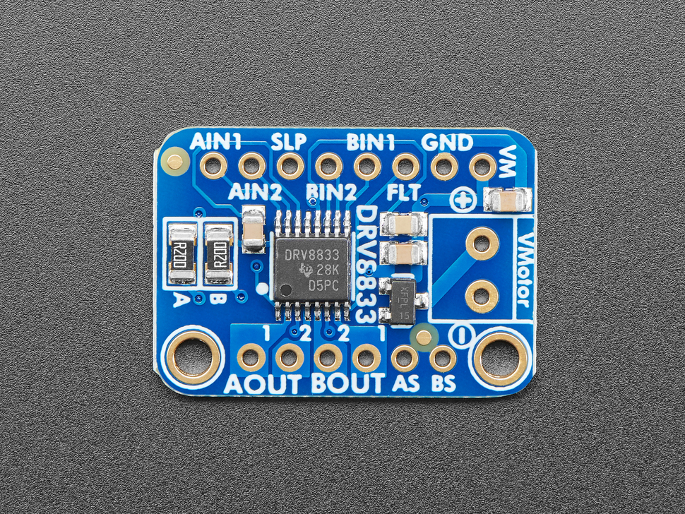 $5.95 each Product link |
- Low-voltage operation suits a roughly 3 V motor. - Protection and current-limiting capability simplify experiments. |
- No built-in haptic effect sequencing. - Second bridge is unused; default current limit is far above this small motor load. |
| Option 3: Adafruit 2448 - TB6612 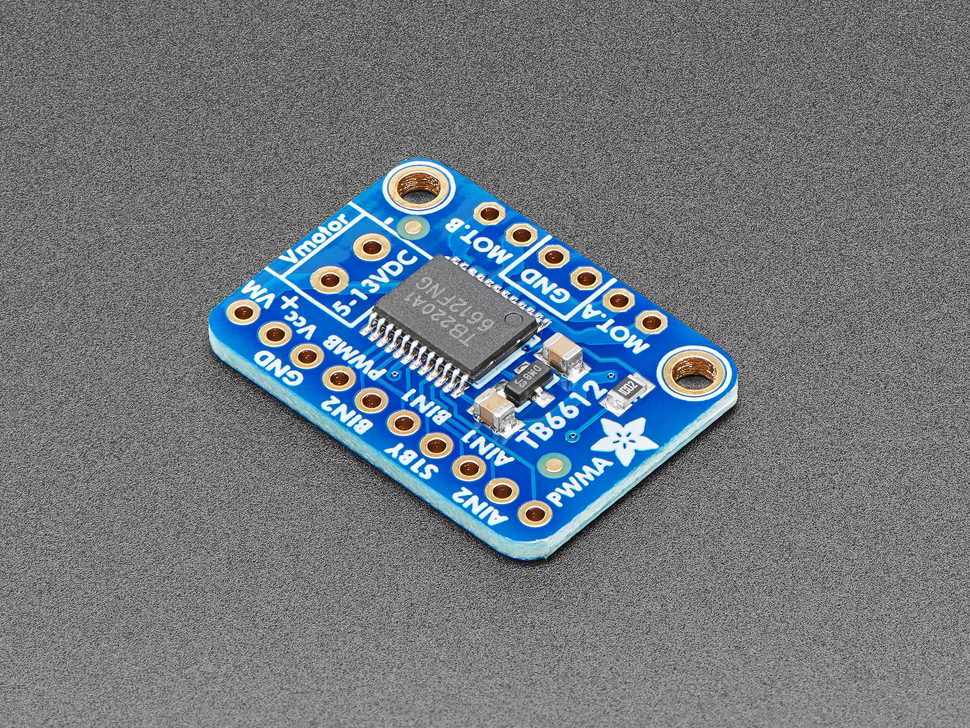 $6.95 each Product link |
- Separate motor and logic rails can suit larger actuators. - Supports direction and speed control with standard digital signals. |
- Supplier recommends 4.5-13.5 V motors; poor fit for the selected 3 V ERM. - Extra control pins and unused bridge add complexity; rejected for this design. |
Choice: Adafruit 2305 / TI DRV2605L
Rationale: The DRV2605L provides built-in vibration effects and reduces the software needed to create distinct alerts. Use I2C instead of the earlier PWM-only interface and configure the driver for the selected ERM motor.
Product photos and specifications: linked supplier pages.
Vibration motor
| Solution | Pros | Cons |
|---|---|---|
| Option 1: Adafruit 1201 - vibrating disc 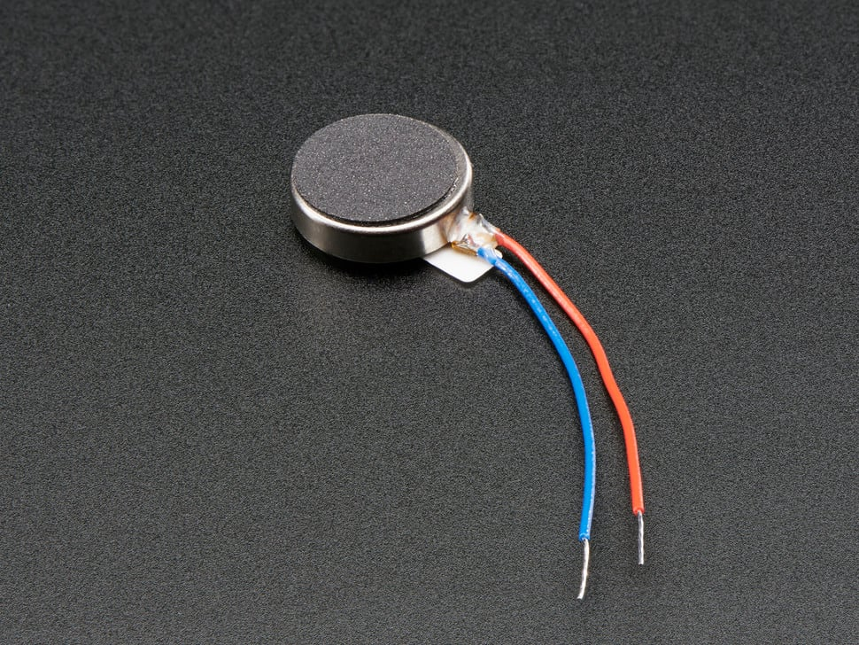 $1.95 each Product link |
- Enclosed mechanism avoids exposed rotating mass. - Low price and compact disc suit grip mounting. |
- Requires a driver and controlled motor voltage. - Mounting stiffness strongly affects feedback; supplier sheet/model consistency needs checking. |
| Option 2: Pololu 1637 - shaftless 8 mm 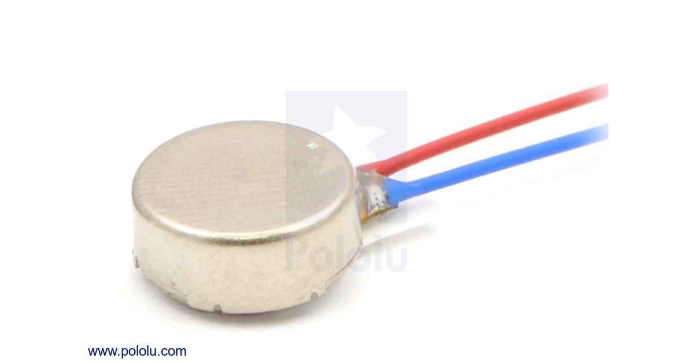 $6.95 each Product link |
- Smaller diameter fits a narrow grip. - Adhesive backing and specified startup current aid integration. |
- Higher price than the selected disc. - Supplier shows backorder availability; smaller force needs grip testing. |
| Option 3: Pololu 2265 - cylindrical ERM 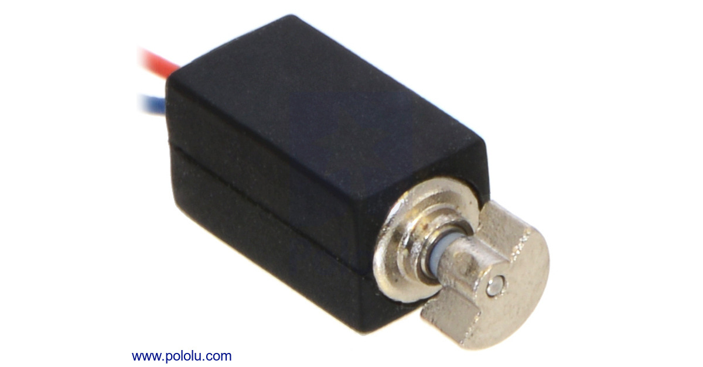 $6.95 each Product link |
- Flat-sided sleeve helps secure the motor. - Narrow profile can fit along the grip wall. |
- Exposed eccentric mass needs clearance. - Backorder availability and higher price make it less attractive. |
Choice: Adafruit 1201 vibrating disc
Rationale: The enclosed disc is small, inexpensive, and easy to mount inside the grip. Drive it through the DRV2605L at a nominal 3 V motor setting, then test the strength of the vibration in the enclosure.
Product photos and specifications: linked supplier pages.
Local power regulation
| Solution | Pros | Cons |
|---|---|---|
| Option 1: Adafruit 2164 - 7805 TO-220 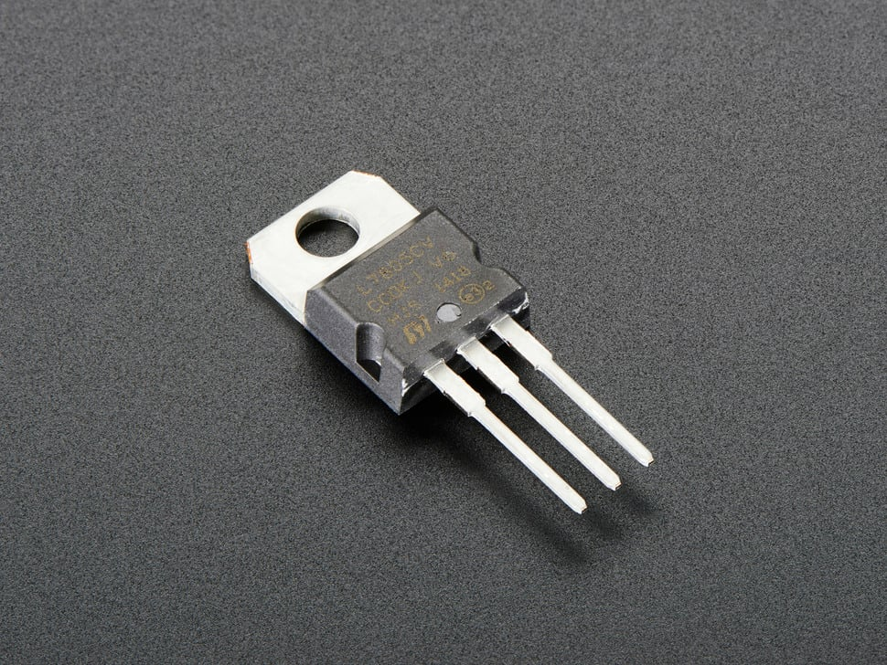 $0.75 each Product link |
- Through-hole package is practical for a custom student PCB. - Low unit cost and fixed output avoid adjustment errors. |
- Needs input headroom, capacitors and thermal design. - Heat reduces battery efficiency; verify actual manufacturer/marking before purchase. |
| Option 2: Adafruit 184 - MIC2941 kit 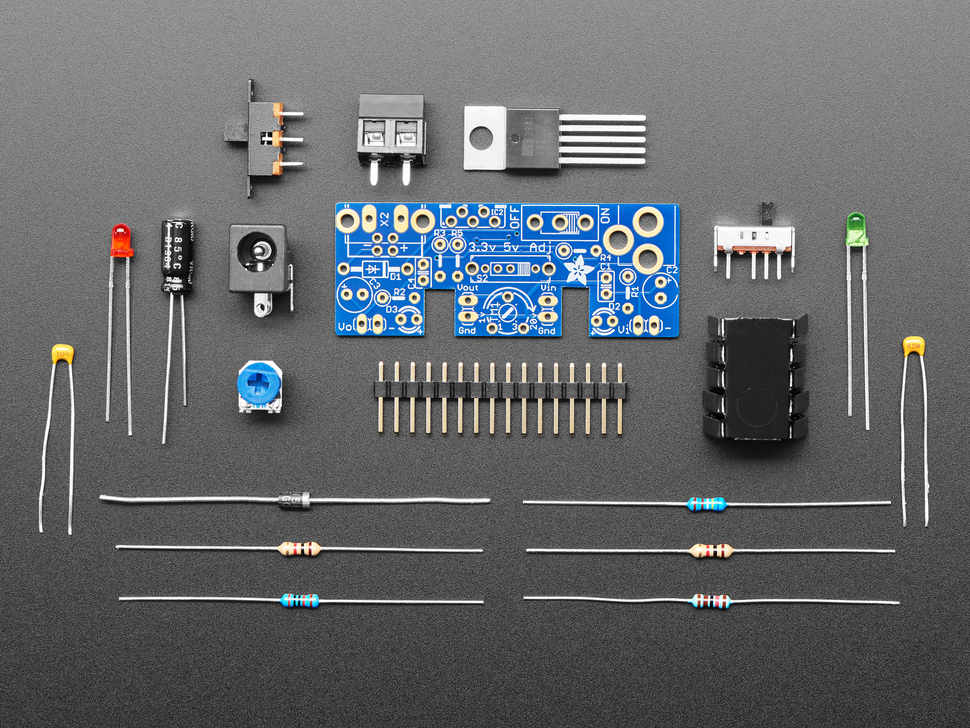 $14.95 each Product link |
- Lower dropout increases input-voltage flexibility. - Kit includes heatsink and prototyping connections. |
- Large assembled kit and higher cost hurt handheld integration. - Listed out of stock; linear heat loss remains despite lower dropout. |
| Option 3: Pololu 5433 - D45V5F5 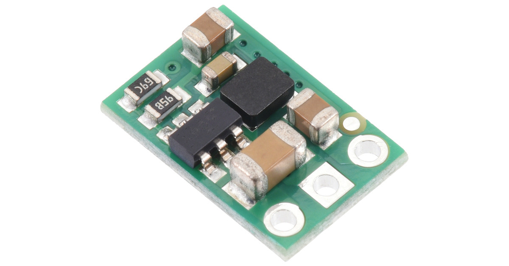 $5.75 each Product link |
- Switching conversion can reduce battery losses. - Very small board with simple VIN/GND/VOUT connections. |
- Switching-only solution does not meet the stated linear-regulator direction. - Current capability depends on input and temperature; rejected as sole local regulator. |
Choice: 7805-based local linear regulator circuit
Rationale: The 7805 is inexpensive, easy to solder, and supports the required local linear-regulator approach. This choice depends on Jose supplying at least 7 V under load; confirm that input and calculate heatsink requirements before building.
Product photos and specifications: linked supplier pages.